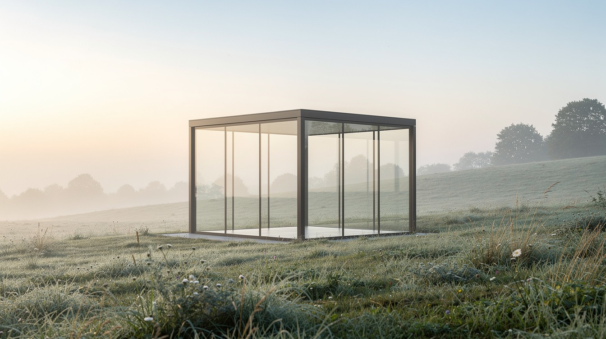

Más que una candidata: una unidad operativa nativa de IA.
ER
Elena
Es dueña de las decisiones
Qué debe existir, cómo debe comportarse y si realmente funcionó.
RequisitosArquitecturaOrquestaciónEvaluaciónDespliegueMonitoreoDecisiones de producción
+
AI
AIPA
Ejecuta a escala
Código de implementación, investigación, redacción, generación de medios y operaciones programadas.
Claude CodeCursorAgentes especializadosRespaldo LLM de 5 proveedores15 servicios · 20 tareas programadas
=
E+A
La unidad
Entrega y rinde cuentas
En producciónUna responsable con nombre
De un problema ambiguo a un resultado desplegado y medible — con una responsable con nombre que responde por él en producción.
Nota · Cómo trabajoElena Revicheva · 1 oct 2026
Trabajo con un entorno de desarrollo nativo de IA: agentes especializados ejecutan gran parte de la implementación, y yo dirijo los requisitos, la arquitectura, la orquestación, la evaluación, el despliegue, el monitoreo y las decisiones de producción.
La diferencia
No vendo velocidad de tecleo sin ayuda.
Soy dueña de las decisiones que determinan qué se construye, qué sale a producción, cómo se comporta — y qué pasa cuando falla.
ERElena Revicheva
Perspectiva profesional · 03 / 08
Lo que realmente hago
Convierto problemas ambiguos de negocio y creativos en sistemas nativos de IA que funcionan.
Definir 01
El resultado
El problema y el resultado medible que debe mover.
Mapear 02
El flujo
Traspasos, controles y puntos de falla.
Elegir 03
Las piezas
Modelos, APIs, herramientas, datos — y dónde debe aprobar una persona.
Dirigir 04
La construcción
Implementación con agentes de programación con IA: Claude Code, Cursor.
Evaluar 05
La prueba
Pruebo el comportamiento, califico resultados, rechazo cambios que lo empeoran.
Operar 06
La operación
Despliego, monitoreo, diagnostico, itero con evidencia de producción.
Mi modelo de desarrollo
Dirección técnica
+
Arquitectura
+
Implementación asistida por IA
+
Responsabilidad en producción
ERElena Revicheva
Perspectiva profesional · 04 / 08
Dónde creo más valor
Tres líneas. Un mismo patrón de fondo.
Línea 01
Operaciones de IA
Descubrimiento y automatización de flujos
Orquestación de agentes
Operación de CRM y pipeline
Monitoreo y ciclos de retroalimentación
Prueba en producción
2,800+
oportunidades, 1,300+ contactos y 2,100+ empresas atribuidas por agentes en HubSpot — investigar, calificar, redactar, un toque humano, enviar.

Línea 02
Producto y transformación con IA
Prototipar la experiencia
Conectar sistemas y desplegar
Organizar la operación a su alrededor
Mejorar con evidencia
Prueba en producción
420+
auditorías en 210+ sitios con mi API de auditoría de visibilidad en IA — un producto público en vivo que mide cómo ven ChatGPT, Perplexity y Claude a un negocio.
Línea 03
Sistemas creativos con IA
Concepto, narrativa y construcción de mundos
Orquestación de imagen · video · audio
Pipelines de producción
Experiencias publicadas
Prueba en producción
8 películas
publicadas desde mi universo ATUONA — 99 poemas en ruso e inglés, hechas de principio a fin con mi propio pipeline.
El hilo conductor: diseño sistemas inteligentes y la experiencia a su alrededor — desde los agentes que operan un negocio hasta las películas que crean.
ERElena Revicheva
Perspectiva profesional · 05 / 08
Evidencia
Opero sistemas, no diapositivas.
En vivo · un servidor en la nube · $0/mes
15
servicios permanentes en producción + 20 tareas programadas
Todos con reinicio automático. Soy la arquitecta y la responsable de guardia.
Oportunidades procesadas
Pipeline LangGraph · decisiones humanas
11,000+
Aprende cada hora de las decisiones que registro en el CRM.
Descubrimiento y calificación
Oportunidades CRM por agentes
HubSpot · atribución de origen
2,800+
1,300+ contactos · 2,100+ empresas. El envío es fail-closed.
Operaciones de IA · RevOps
Auditorías de visibilidad en IA
API pública · GEO / AEO
420+
14,000+ señales en 210+ sitios. Mi propio sitio obtiene 100/100.
GEO · AEO · SEO técnico
Películas de IA publicadas
ATUONA AI Film Studio
8
Crimson Escape: 3:36, 16 tomas generadas, mezcla a −15.7 LUFS.
Producción creativa con IA
Pruebas automatizadas
Unitarias · integración · golden set
600+
Corren en menos de un minuto; respaldo LLM de 5 proveedores.
Confiabilidad y evaluación
Base ejecutiva
Deputy CEO y Chief Legal Officer
7 años
Operador gubernamental de servicios digitales: transformación, TI, gobernanza.
Liderazgo
Todas las cifras son mínimos tomados de los registros de producción y de la API del CRM en vivo, contados el 28–29 de septiembre de 2026.
ERElena Revicheva
Perspectiva profesional · 06 / 08
Responsabilidad ante las fallas
Qué hago cuando algo falla — y cómo se llama.
Falla silenciosa · silent failure
Una integración que nunca avisó que estaba rota
Hallazgo
Los registros de prueba nunca llegaron al CRM desde el lanzamiento, aunque el log del emisor se veía sano.
Acción
Audité desde el lado receptor, encontré la causa raíz, lo corregí y recuperé a los 28 usuarios perdidos.
Control vacío · vacuous guard
Un tope de gasto que nunca podía activarse
Hallazgo
El control de presupuesto leía un campo de precio que el proveedor nunca envía, así que todo precio pasaba.
Acción
Lo corregí contra la respuesta real del proveedor y publiqué el postmortem.
Puerta de evaluación · evaluation gate
El modelo más complejo perdió
Hallazgo
Una mejora con RAG de mi juez de filtrado puntuó peor en un set de evaluación hecho con mis decisiones reales.
Acción
La lancé desactivada. La precisión le gana a la sofisticación.
Degradación elegante · graceful degradation
Un proveedor retiró sus modelos. Nada se cayó.
Hallazgo
Un proveedor descontinuó los modelos que usaban mis agentes.
Acción
La cadena de respaldo de cinco proveedores mantuvo todo funcionando — un cambio de configuración, no una caída.
Kintsugi, no encubrimientos
La reparación queda a la vista. Publico los postmortems abiertamente, con cada modo de falla por su nombre.